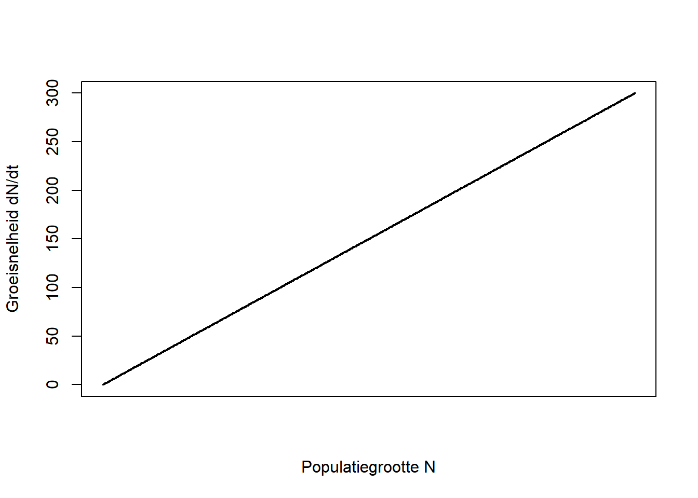
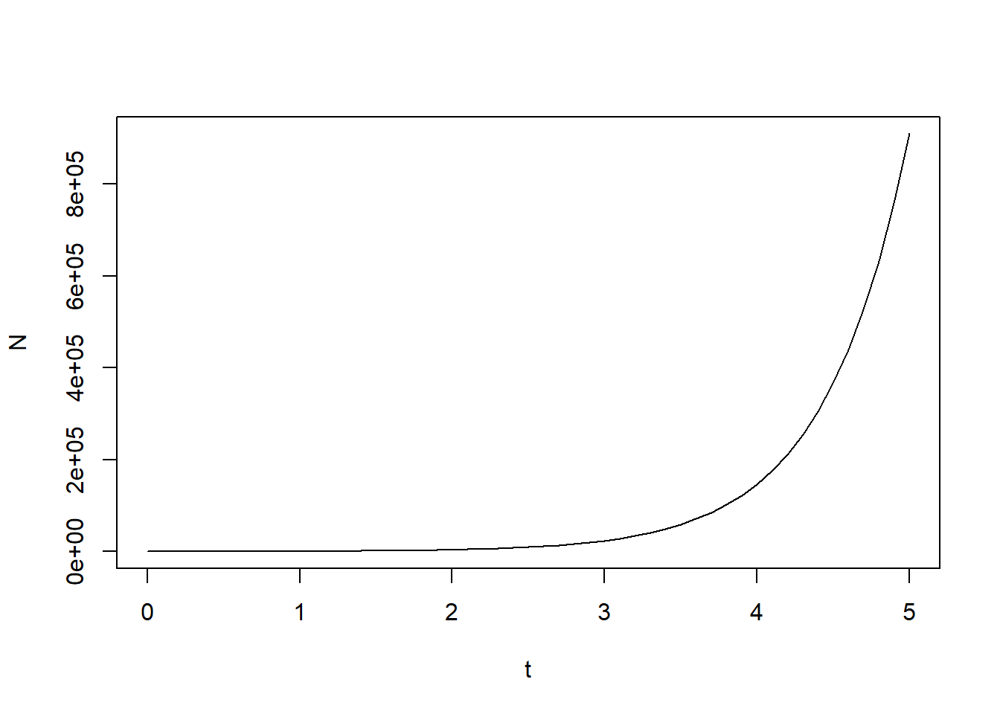
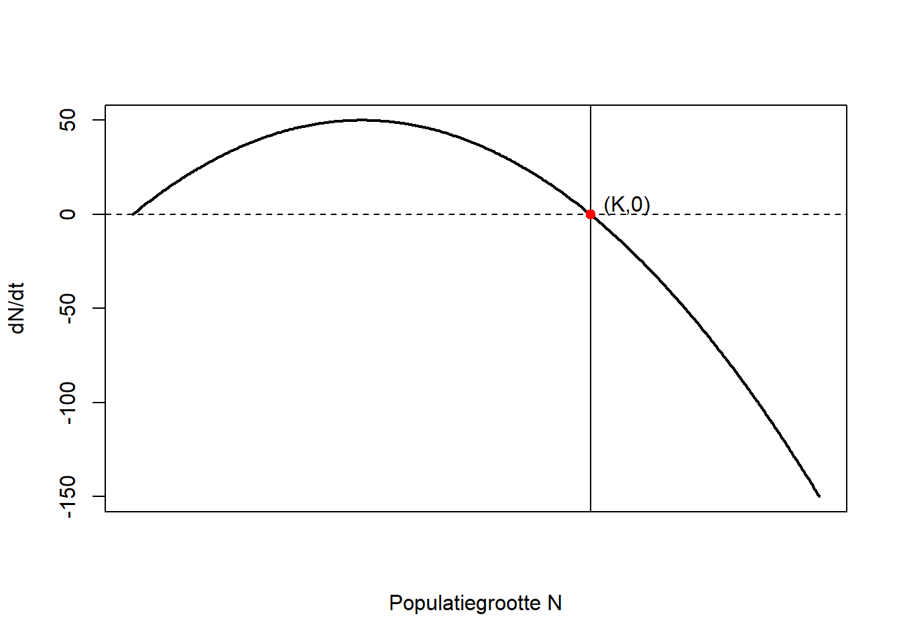
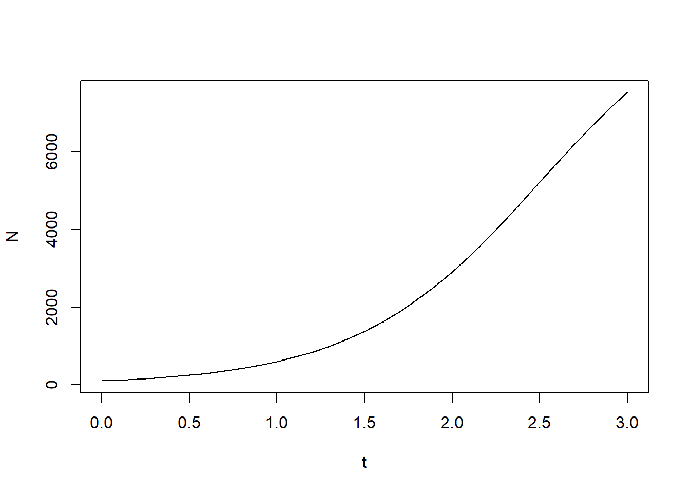
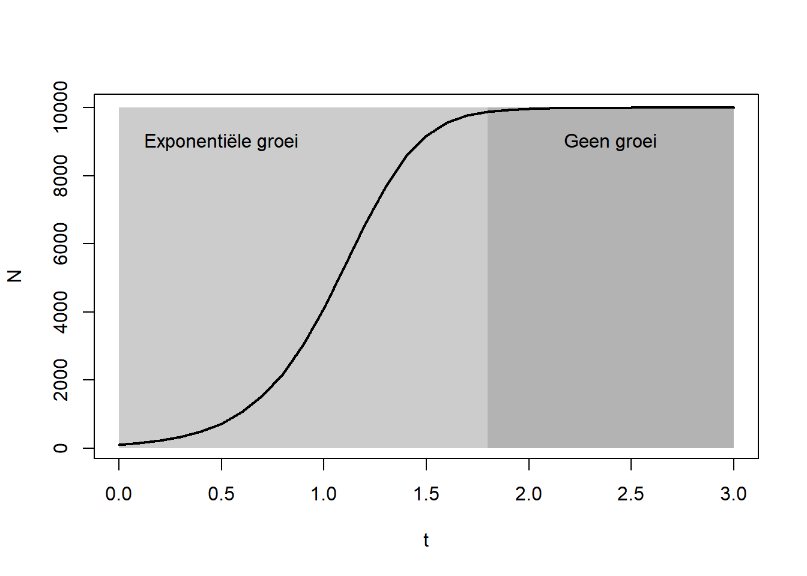
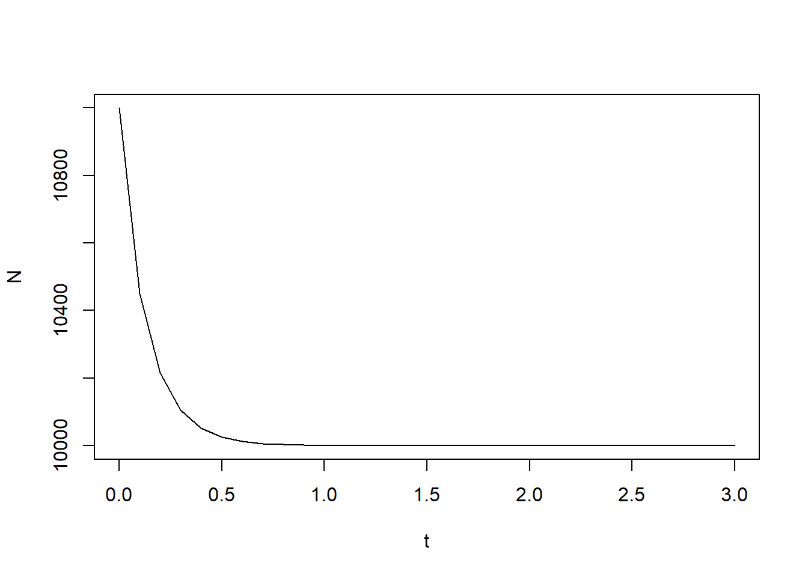
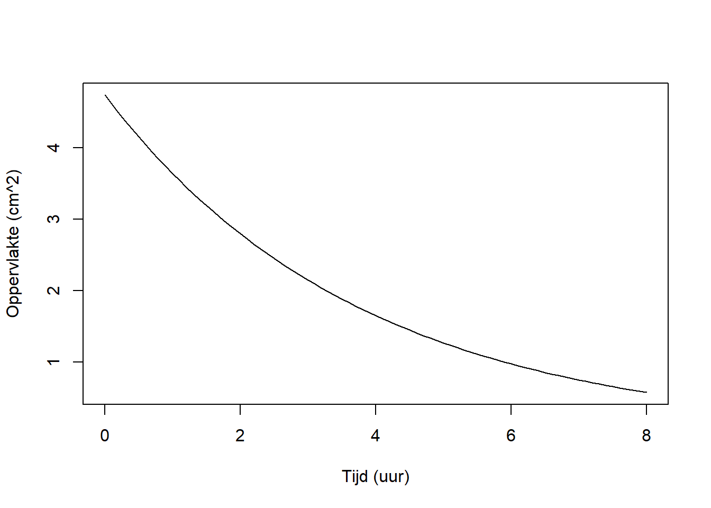
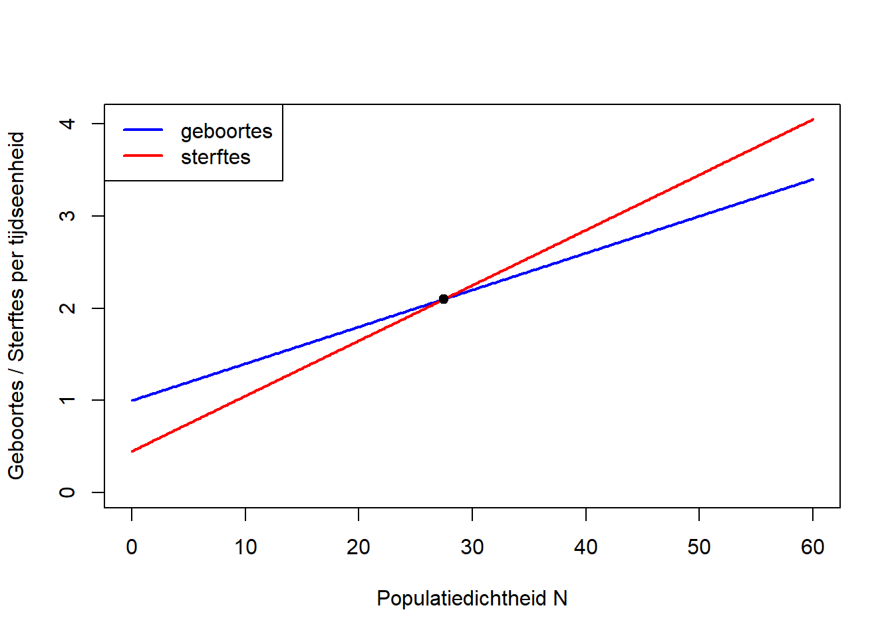
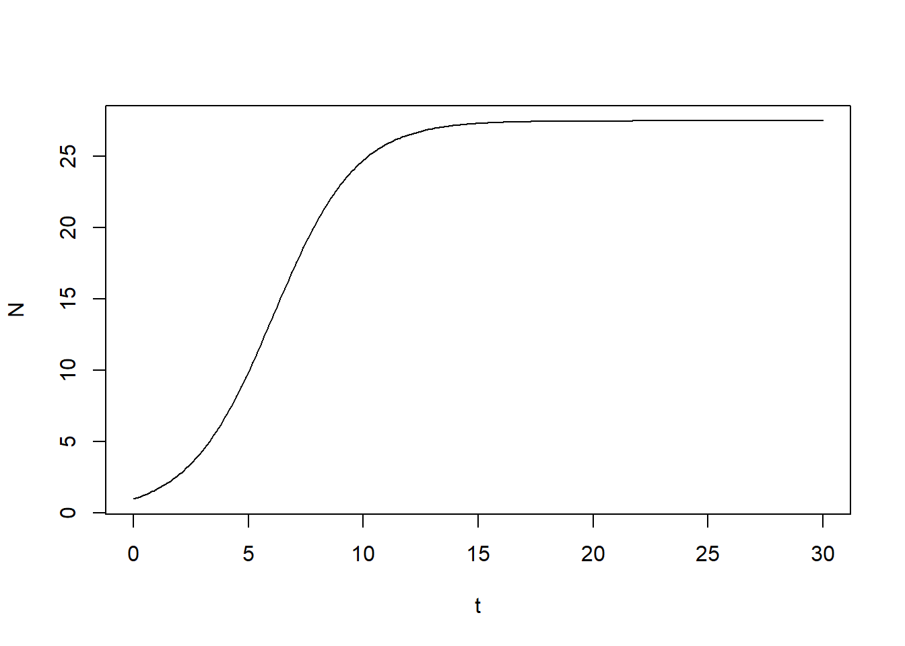

Differentiaalvergelijkingen
Stel je weet van een bepaalde populatie maar één ding: elk individu krijgt gemiddeld 2 nakomelingen per jaar. Verder heb je geen informatie uit tellingen of tussentijdse metingen. Toch kun je, met alleen deze regel en een startaantal, de populatiegrootte op elk moment in de toekomst redelijk voorspellen.
Dat is de kern van een differentiaalvergelijking: een vergelijking die niet een grootheid (in dit geval populatiegrootte) zelf beschrijft, maar hoe die verandert. Een differentiaalvergelijking heeft de volgende algemene vorm:
\[\frac{dN}{dt} = f(N), \quad N(0)=N_0. \tag{1}\]
Hierbij is \(f\) een specifieke functie die de geobserveerde verandering beschrijft, en \(N(0)\) is de beginwaarde.
Zo’n vergelijking is niet alleen van toepassing in populaties, maar in allerlei (biologische) contexten. Levende systemen veranderen immers continu. Populaties groeien, krimpen en migreren; cellen delen en sterven, en concentraties in allerlei omgevingen veranderen… Deze verandering over de tijd is vaak makkelijker bij te houden of te schatten dan de absolute aantallen. Dit is ook waarom we deze algemene vorm introduceren: de wiskunde die in dit portfolio geïntroduceerd wordt, is veel breder toepasbaar.
Als we dan wel iets willen weten over hoe de populatiegrootte zich over de tijd heen ontwikkelt, proberen we de differentiaalvergelijking op te lossen. Daarmee zoeken we op basis van Equation 1 een uitdrukking voor \(N(t)\); de populatiegrootte als functie van de tijd. In dit portfolio-onderdeel bekijken we hier een veelvoorkomend voorbeeld van dat biologisch ook erg relevant is. Soms is het moeilijk of zelfs niet mogelijk om een uitdrukking voor \(N(t)\) te vinden. In dat geval kan het nog steeds nuttig zijn om vergelijking Equation 1 te visualiseren en om een schatting te krijgen van de waarde van \(N\) op bepaalde punten. Hiervoor gebruiken we numerieke integratie. We behandelen hiervan een simpel voorbeeld en introduceren nieuwe R-code.
Exponentiële groei
In het voorbeeld waarin een individu gemiddeld 2 nakomelingen krijgt, waarbij we aannemen dat de populatie begint met 100 individuen, kunnen we een populatiegrootte bijvoorbeeld beschrijven via
\[\frac{dN}{dt} = 2N(t), \quad N(0)=100.\]
Hierin zien we dat hoe meer individuen er zijn, hoe meer nakomelingen er bijkomen en dus hoe groter de groeisnelheid van de populatie wordt. In dit geval hebben we exponentiële groei gemodelleerd, waarbij elk individu dus per tijdseenheid 2 nakomelingen krijgt. We kunnen aantonen dat dit inderdaad een exponentiële groeifunctie beschrijft door de differentiaalvergelijking op te lossen.
Merk op dat we dit scenario al eerder kort aan bod hebben zien komen, in ?@sec-rekenregels. Daarbij redeneerden we de andere kant op door op basis van de huidige populatiegrootte het aantal verstreken generaties te bepalen.
Exercise 1 Merk op dat exponentiële groei gemodelleerd wordt met de functie \(N(t)=Ce^{rt}\), waarbij \(r\) en \(C\) constantes zijn. Bepaal de afgeleide van deze functie en laat daarmee zien dat deze oplossing inderdaad hoort bij de differentiaalvergelijking \(\frac{dN}{dt}=rN(t)\).
TipAntwoord Exercise 1
Met de kettingregel geldt \(\frac{dN}{dt} = C\cdot r e^{rt} = r\cdot Ce^{rt} = rN(t)\). Dit is precies de differentiaalvergelijking. Voor \(r=2\) en \(N(0)=C=100\) volgt \(N(t)=100e^{2t}\).
Als je toevallig bekend bent met de syntax van \(\LaTeX\), kun je deze gebruiken om je antwoord te geven. Zo niet, doe dit dan op papier; zodra de antwoorden online komen, kun je je uitwerking controleren.
We kunnen bekijken hoe de groeisnelheid afhangt van de huidige populatiegrootte. We vinden dan de volgende grafiek:
Merk op dat dit laat zien wat we eerder in woorden hadden geconcludeerd: hoe groter de populatie, hoe groter de groeisnelheid.
In plaats van de groeisnelheid \(dN/dt\) als functie van \(N\), kunnen we ook \(N\) als functie van de tijd \(t\) plotten. Hiervoor maken we gebruik van numerieke integratie, en in het bijzonder de methode van Euler.
De methode van Euler
Voor \(\frac{dN}{dt}=rN\) vonden we, zoals je in Exercise 1 liet zien, een exacte formule voor \(N(t)\). Dat lukt niet altijd: voor veel differentiaalvergelijkingen bestaat er geen nette uitdrukking voor \(N(t)\). Toch kunnen we de vergelijking dan nog steeds gebruiken om \(N\) te benaderen, met een simpel idee: we kennen op elk moment de groeisnelheid \(\frac{dN}{dt}\), dus we kunnen een klein stapje vooruit zetten door de huidige waarde op te tellen bij (stapgrootte × groeisnelheid):
\[N(t+dt) \approx N(t) + dt \cdot \left.\frac{dN}{dt}\right|_{N(t)}. \tag{2}\]
In dit geval wordt dat dus \[N(t+dt) \approx N(t) + dt \cdot rN(t). \tag{3}\]
Dit is Euler-integratie of de methode van Euler. Als je dit vaak genoeg doet, kun je voor elk tijdspunt de waarde van \(N(t)\) benaderen. Hoe kleiner je de stapgrootte dt is, hoe nauwkeuriger de benadering, maar ook hoe meer rekenstappen nodig zijn.
dt <- 0.1 # tijdstappen voor berekeningen en plotten
r <- 2 # groeisnelheid
t <- seq(0,5, by = dt) # we plotten 5 tijdseenheden
N <- numeric(length(t)) # vector om populatiegroottes in op te slaan
N[1] <- 100 # beginwaarde 100
for(i in 1:(length(t)-1)){
N[i + 1] <- N[i] + dt * r * N[i] # huidige waarde + tijdsstap*afgeleide (differentiaalvergelijking)
}
plot(t,N, type = 'l')
Exercise 2 Verklaar de laatste twee grafieken op basis van de differentiaalvergelijking en relateer ze aan elkaar.
TipAntwoord Exercise 2
De eerste grafiek toont \(\frac{dN}{dt}=2N\): een rechte lijn door de oorsprong, dus de groeisnelheid is evenredig met \(N\). De tweede grafiek toont \(N(t)\), en de helling van die curve op elk tijdstip is precies de waarde uit de eerste grafiek bij de dan geldende \(N\). Omdat \(N\) groeit, wordt de helling steeds steiler, waardoor de curve steeds sneller omhoog buigt: exponentiële groei.
Exercise 3 Wat is, uitgaande van deze exponentiële relatie, het verband tussen de afhankelijke variabele \(\ln(N)\) en de onafhankelijke variabele \(t\)?
Dit is dezelfde truc als bij ?@exr-plot_log_data uit ?@sec-log_exp: een exponentieel verband wordt, na het nemen van de logaritme, een lineair verband. Daar gebruikte je dat om met lm() een exponent te schatten uit een log-log-plot; hier ga je straks hetzelfde doen om de groeisnelheid \(r\) te schatten.
TipAntwoord Exercise 3
Uit \(N=Ce^{rt}\) volgt \(\ln(N)=\ln(C)+rt\). Dit is lineair in \(t\), met helling \(r\) en snijpunt \(\ln(C)=\ln(N_0)\).
Logistische groei
We zien in de grafiek voor exponentiële groei dat de populatiegrootte in vijf tijdheden van 100 tot meer dan \(10^5\) is gegroeid. Dat is een enorme toename, en het is niet realistisch dat een gebied die groei aan kan. Doordat de ruimte en de hoeveelheid voedsel beperkt is, onstaat er competitie. Hierdoor is er een bovengrens voor het totaal aantal dieren in de populatie. We noemen deze grens ook wel de draagkracht en noteren deze als \(K\). De groei van de populatie wordt dan afhankelijk van de verhouding tussen de populatiegrootte en de draagkracht. Dit zien we in de volgende uitdrukking:
\[\begin{align} \frac{dN}{dt} & = rN\left(1-\frac{N}{K}\right) \\ & = rN-r\frac{N^2}{K} \end{align} \tag{4}\]
Via deze app kun je de beschreven groeimodellen (constante groei, exponentiële groei en logistische groei) simuleren om een intuïtie te ontwikkelen voor hoe dit werkt. Hier laten we ook enkele voorbeelden zien.
Net zoals bij de exponentiële groei kunnen we de groeisnelheid uitzetten tegen de populatiegrootte:

Merk op dat deze paraboolvorm ook af te leiden is uit de kwadratische term in Equation 4.
Exercise 4 In bovenstaande plot is het punt \((K,0)\) expliciet genoteerd. Waarom is dit een interessant punt? Bedenk wat het betekent dat de grafiek de lijn \(dN/dt=0\) snijdt (en dus wat het betekent als \(dN/dt >0\) of \(dN/dt <0\) geldt).
TipAntwoord Exercise 4
Bij \(N=K\) geldt \(dN/dt=0\): er is geen netto groei, dus de populatie is in evenwicht. Voor \(N<K\) is \(dN/dt>0\) en groeit de populatie (richting \(K\)); voor \(N>K\) is \(dN/dt<0\) en krimpt ze (ook richting \(K\)). Het evenwicht bij \(K\) is dus stabiel.
Exercise 5 De grafiek gaat ook door het punt \((0,0)\). Hoe interpreteren we dit punt, en waarom is het verloop van de grafiek rondom dit punt logsich?
TipAntwoord Exercise 5
Bij \(N=0\) zijn er geen individuen en dus ook geen nakomelingen: \(dN/dt=0\) (uitgestorven populatie blijft uitgestorven). Voor kleine \(N\) is \(N/K\approx 0\), dus \(dN/dt\approx rN\): de grafiek begint bijna lineair met helling \(r\), net als bij exponentiële groei, omdat er nog nauwelijks competitie is.
We kunnen de beschreven situatie, met als draagkracht 10000 individuen, op een vergelijkbare wijze visualiseren:
dt <- 0.1
r <- 2 # groeisnelheid
K <- 10000 # draagkracht
t <- seq(0,3, by = dt)
N <- numeric(length(t))
N[1] <- 100
for(i in 1:(length(t)-1)){
N[i + 1] <- N[i] + dt *r*N[i]*(1 - N[i]/K) # de nieuwe differentiaalvergelijking
}
plot(t,N, type = 'l')
Merk op dat een deel van deze grafiek erg lijkt op die van de exponentiële groei. Dit zien we ook terug in de differentiaalvergelijkingen: als \(\frac{N}{K}\) erg klein, komen de twee modellen met elkaar overeen. Dit betekent dat het exponentiële groeimodel werkt onder de aanname dat de populatie zich in de exponentiële groeifase bevindt.
Denk ook terug aan ?@eq-pkz voor het berekenen van de pKz in het tweede portfolio-onderdeel. Daar ging het om de ratio \(\frac{[\text{Z}^-]}{[\text{HZ}]}\), en hier bepaalt de ratio \(\frac{N}{K}\) het gedrag van het systeem.
Na een tijdje zien we geen verandering meer in de populatiegrootte. Dit betekent dat er netto geen groei is. We spreken dan van een evenwicht.
We kunnen dus de grafiek opdelen in twee fases:

Exercise 6 We laten nu de populatiegrootte starten boven de draagkracht. Bedenk waarom het verloop van de volgende grafiek nu logisch is.
N[1] <- 1.1*K # start op 1.1 maal de draagkracht
for(i in 1:(length(t)-1)){
N[i + 1] <- N[i] + dt *r*N[i]*(1 - N[i]/K)
}
plot(t,N, type = 'l')
TipAntwoord Exercise 6
Als \(N>K\) is \(1-N/K<0\), dus \(dN/dt<0\): de populatie krimpt omdat er te weinig ruimte of voedsel is voor zoveel individuen. Dichter bij \(K\) wordt \(|dN/dt|\) kleiner, dus de daling vlakt af en de populatie nadert \(K\) van bovenaf.
Er zijn ook andere situaties waarin populatiegroottes kunnen afnemen. Stel dat we een bacteriekolonie hebben, waarvan op verschillende tijdstippen de grootte gemeten wordt door de oppervlakte (aangeduid met \(A\) in cm\(^2\)) te bepalen die de kolonie in een petrischaal inneemt. Dit levert de volgende gegevens op:
| Tijd \(t\) (uur) | Oppervlakte \(A\) (cm\(^2\)) |
|---|---|
| 0 | 4.74 |
| 2 | 2.80 |
| 4 | 1.71 |
| 6 | 1.04 |
| 8 | 0.94 |
We nemen aan dat de oppervlakte \(A\) van de kolonie als functie van de tijd \(t\) wordt beschreven door een exponentiele functie: \[\begin{equation} A(t)=\alpha e^{\beta t}. \end{equation}\]
Exercise 7 Hoe kunnen we ervoor zorgen dat de dalende trend uit de tabel gevolgd wordt door het model? Simuleer dit, en haal hierbij inspiratie uit eerder gegeven code. De exacte datapunten uit de tabel hoeven niet benaderd te worden, het gaat om de trend. Denk aan de mogelijke parameterwaarden.
TipAntwoord Exercise 7
Neem een negatieve groeisnelheid (\(\beta<0\), dus \(dA/dt=\beta A\)). Uit de tabel: \(\beta\approx\ln(2.80/4.74)/2\approx-0.26\) per uur.
dt <- 0.1
beta <- -0.26
t <- seq(0, 8, by = dt)
A <- numeric(length(t))
A[1] <- 4.74
for(i in 1:(length(t)-1)){
A[i + 1] <- A[i] + dt * beta * A[i]
}
plot(t, A, type = "l", xlab = "Tijd (uur)", ylab = "Oppervlakte (cm^2)")
Parameters schatten
We kunnen de draagkracht en groeisnelheid ook afleiden uit andere observaties.
We beschrijven een populatie met dichtheid \(n\) (exacte eenheden laten we buiten beschouwing) en observeren dat het per capita aantal geboortes \(g\) en sterftes \(s\) in de populatie dichtheidsafhankelijk is. We hebben hiervoor de vergelijkingen \[\begin{equation} \frac{dg}{dt} = 1 + 0.04n, \quad \frac{ds}{dt} = 0.45 + 0.06n. \end{equation}\]
Exercise 8 Interpreteer deze vergelijkingen. Wat betekent het dat het aantal geboortes en sterftes afhankelijk is van de dichtheid? Geef een mogelijke context waarin dit voor kan komen.
TipAntwoord Exercise 8
Zowel geboorte- als sterftecijfer nemen lineair toe met de dichtheid, maar sterfte sneller (0.06 > 0.04), dus bij hoge dichtheid wint sterfte het van geboorte. Mogelijke context: bij hogere dichtheid vind je makkelijker een partner of kun je beter in groepen jagen/verdedigen (meer geboortes), maar neemt ook de competitie om voedsel en de verspreiding van ziektes toe (meer sterfte).
We kunnen deze vergelijkingen plotten. Hiervoor introduceren we eerst functies in R.
g <- function(n) 1 + 0.04*n
# of (vooral voor langere functies:)
s <- function(n) {
0.45 + 0.06*n
}We hebben hier de functies g en s gedefinieerd, met function(n) .... Een functie neemt een input (hier de dichtheid n) en geeft daar volgens een vaste regel (bij g bijvoorbeeld \(1+0.04n\)) een output bij. Het voordeel van een R-functie is dat je deze kunt hergebruiken voor elke waarde van n, zonder de berekening opnieuw uit te typen.
# evenwichtspunt
K <- 27.5
# plotbereik
n_vals <- seq(0, 60, length.out = 400)
# basisplot
plot(n_vals, g(n_vals), type = "l", lwd = 2, col = "blue",
ylim = c(0, max(g(n_vals), s(n_vals))),
xlab = "Populatiedichtheid N",
ylab = "Geboortes / Sterftes per tijdseenheid")
lines(n_vals, s(n_vals), lwd = 2, col = "red")
# evenwichtspunt
points(K, g(K), pch = 19)
# legenda
legend("topleft",
legend = c("geboortes", "sterftes"),
col = c("blue", "red"),
lwd = 2)
Exercise 9 Leg in woorden uit wat bovenstaande code doet, stap voor stap: wat is n_vals, wat berekenen g(n_vals) en s(n_vals), en wat laat de uiteindelijke plot zien? Relateer je antwoord aan de vergelijkingen voor \(\frac{dg}{dt}\) en \(\frac{ds}{dt}\) hierboven.
TipAntwoord Exercise 9
n_vals is een vector van 400 gelijk verdeelde dichtheden tussen 0 en 60. g(n_vals) en s(n_vals) berekenen voor elke dichtheid de waarde van \(1+0.04n\) en \(0.45+0.06n\). De plot tekent beide rechte lijnen (blauw: geboortes, snijpunt met y-as 1 en helling 0.04; rood: sterftes, snijpunt 0.45 en helling 0.06; ylim zorgt dat beide passen). Het zwarte punt markeert het snijpunt bij \(n=27.5\), waar geboortes en sterftes gelijk zijn (\(g=s=2.1\)).
We willen nu deze processen samen nemen in één vergelijking, en werken daarbij onder de aanname van logistische groei.
Exercise 10 Wat wordt de uitdrukking voor de verandering per tijdseenheid \(\frac{dN}{dt}\) als er wordt aangenomen dat de populatiegrootte \(N\) logistische groei volgt? Wat is de initiële per capita groeisnelheid \(r\), en wat is de draagkracht \(K\)? Relateer je antwoord ook aan bovenstaande figuur.
TipAntwoord Exercise 10
De figuur toont per capita cijfers, dus \(\frac{dN}{dt}=N\,(g-s)=N(0.55-0.02N)=0.55N\left(1-\frac{N}{27.5}\right)\). Dus \(r=0.55\) (het verschil \(g-s\) bij \(N=0\), dus de afstand tussen de lijnen aan de linkerkant) en \(K=0.55/0.02=27.5\) (het snijpunt van beide lijnen).
Met de gevonden parameters kunnen we een model noteren dat de populatiegrootte beschrijft als functie van tijd.
Exercise 11 In bovenstaande code hebben we het evenwichtspunt gemarkeerd en \(K\) genoemd. Leg uit wat er gebeurt als \(N=K\) geldt en koppel dit aan je antwoord bij Exercise 4. Wat voor interpretatie heeft dit voor het per capita sterfte- en geboortecijfer? Wat gebeurt er als \(N\) iets kleiner is dan \(K\)? En iets groter?
TipAntwoord Exercise 11
Bij \(N=K\) is het per capita geboortecijfer gelijk aan het per capita sterftecijfer, dus \(dN/dt=0\): het evenwicht \((K,0)\) uit Exercise 4. Iets onder \(K\) zijn geboortes groter dan sterftes, dus groeit \(N\) richting \(K\); iets boven \(K\) zijn sterftes groter, dus krimpt \(N\) richting \(K\). Het evenwicht is stabiel.
Exercise 12 Simuleer nu het model met de gevonden waarden voor \(r\) en \(K\) (gebruik eerder gegeven code als voorbeeld). Bedenk een manier om aan de hand van het object \(N\) (de berekende dichtheid per tijdstip) een benadering te krijgen van de waarden van \(r\) en \(K\). Dat wil zeggen: bedenk dat je in een situatie zit waarin je alleen deze lijst zou hebben, en niet zou weten welke waarden van \(r\) en \(K\) zijn gebruikt om deze te maken. Hoe zou je deze toch kunnen schatten (tip: wanneer observeren we gedrag direct gerelateerd aan deze parameters?)
TipAntwoord Exercise 12
dt <- 0.1
r <- 0.55
K <- 27.5
t <- seq(0, 30, by = dt)
N <- numeric(length(t))
N[1] <- 1
for(i in 1:(length(t)-1)){
N[i + 1] <- N[i] + dt * r * N[i] * (1 - N[i]/K)
}
plot(t, N, type = "l")
# schattingen alleen uit N:
K_schat <- tail(N, 1) # plateau = draagkracht
r_schat <- (N[2] - N[1]) / (dt * N[1]) # begin: dN/dt ≈ rN
c(K_schat, r_schat)[1] 27.49996 0.53000De draagkracht lees je af aan het plateau waar \(N\) niet meer verandert. De groeisnelheid \(r\) lees je af aan het begin, waar \(N\ll K\) en dus \(\frac{dN}{dt}\approx rN\), oftewel \(r\approx\frac{dN/dt}{N}\).
Exercise 13 We kunnen de schatting voor \(r\) wat preciezer maken. In Exercise 3 vond je een lineair verband tussen \(\ln(N)\) en \(t\) voor exponentiële groei. Dat verband geldt hier niet exact, omdat je populatie logistisch groeit, maar zoals eerder vermeld, blijft het logistische groeimodel dicht bij het exponentiële model blijft zolang \(N/K\) klein is.
Gebruik daarom alleen het beginstuk van je gesimuleerde reeks uit Exercise 12 (de tijdspunten waarop \(N\) nog ver onder \(K\) ligt), en pas daar je kennis van lineaire regressie toe: bepaal met lm() de helling van \(\ln(N)\) tegen \(t\). Komt deze schatting van \(r\) in de buurt van je eerdere schatting?
TipAntwoord Exercise 13
vroeg <- N < 0.1 * K # alleen het beginstuk
model <- lm(log(N[vroeg]) ~ t[vroeg])
coef(model)[2] # helling = schatting van r t[vroeg]
0.5037227 De helling komt dicht bij \(r=0.55\) uit (iets lager, omdat \(N/K\) nooit precies 0 is en Euler met \(dt=0.1\) een kleine afwijking geeft), en is preciezer dan de schatting uit slechts twee punten, omdat alle punten van het beginstuk meedoen.
Exercise 14 Je hebt in de vorige opgave lineaire regressie toegepast op \(\ln(N)\) tegen \(t\). Welke aanname over het groeiproces moet daarvoor gelden? Waarom is die aanname bij Exercise 13 redelijk voor het beginstuk van de data, maar niet voor de volledige reeks? Verwijs in je antwoord naar de aannames van lineaire regressie zoals besproken in ?@sec-bradford.
TipAntwoord Exercise 14
Het groeiproces moet exponentieel zijn: een constante per capita groeisnelheid \(r\), zodat \(\ln(N)=\ln(N_0)+rt\) lineair is in \(t\) (de aanname van lineariteit bij lineaire regressie). In het beginstuk is \(N\ll K\), dus \(1-N/K\approx1\) en is de groei bij benadering exponentieel. Over de hele reeks neemt de per capita groei af naarmate \(N\) naar \(K\) gaat en vlakt \(\ln(N)\) af: het verband is dan gekromd, de lineariteitsaanname klopt niet, en de residuen vertonen een systematisch patroon in plaats van willekeurige spreiding.